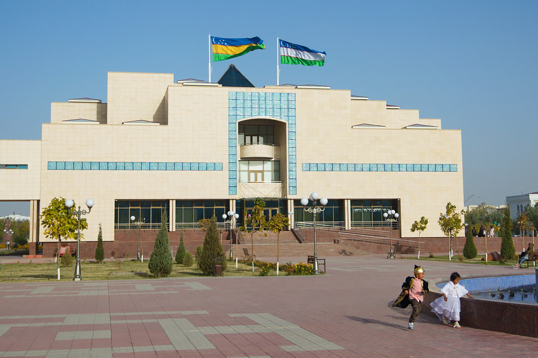

Новость QQ.XABAR
Подробности важного события — в материале QQ.XABAR.

Событие вызвало заметный интерес у жителей региона. Представители профильных организаций поделились главными деталями и рассказали о ближайших планах.
Новая инициатива направлена на развитие городской среды, поддержку местных сообществ и создание дополнительных возможностей для людей. Работа над проектом продолжится с учётом мнений жителей.
Что будет дальше
В ближайшее время будет опубликован подробный план мероприятий. QQ.XABAR продолжит следить за развитием ситуации и оперативно сообщать о важных обновлениях.